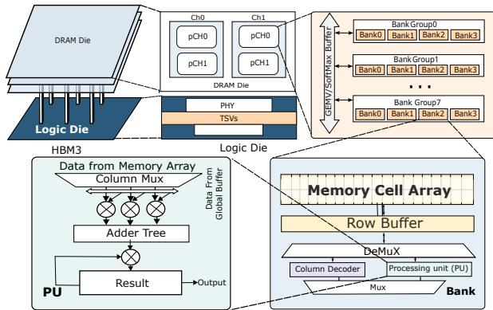
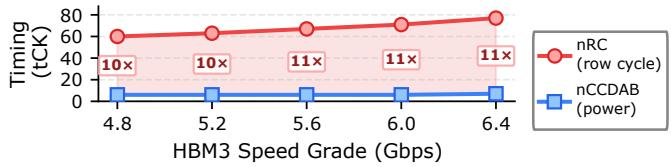
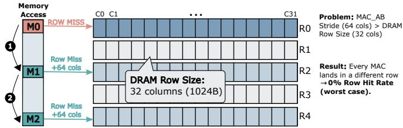
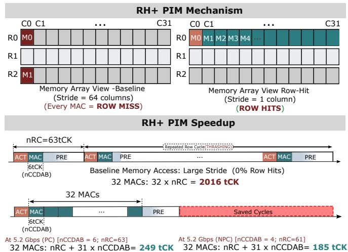
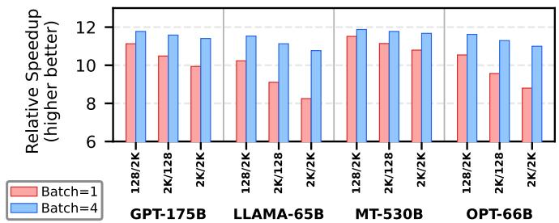
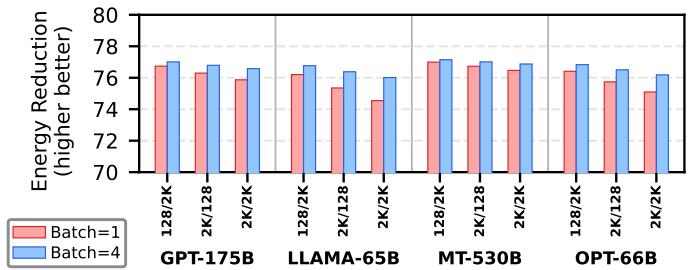
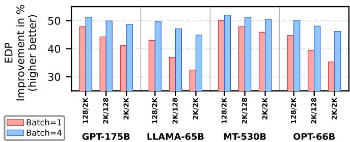
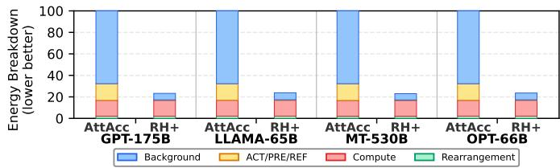

RH+: Row-Hit-Optimized Scheduling for PIM-based LLM Inference 论文解析¶
0. 论文基本信息¶
作者 (Authors): Yongchan Jung, Shafayat Mowla Anik, Byeong Kil Lee, Jeeho Ryoo
发表期刊/会议 (Journal/Conference): unknown
发表年份 (Publication Year): 2024
研究机构 (Affiliations): Fairleigh Dickinson University, University of Colorado Colorado Springs
1. 摘要¶
目的
- 揭示在PIM（processing-in-memory）架构的LLM推理中，nRC（DRAM行周期时间） 而非此前认为的 nCCDAB（功率约束参数） 才是GEMV操作的真实性能瓶颈。
- 指出基线地址交错策略（步长64列）导致每次全组MAC命令（MAC AB）落入不同行，造成0%行命中率，nRC完全掩盖了nCCDAB的影响。
- 提出 RH+调度，通过改变地址步长实现连续MAC操作的行命中，从而大幅提升性能并降低能耗。
方法
- 瓶颈分析：基于HBM3规格，nRC（60–77 tCK）是nCCDAB（6–7 tCK）的10–11倍；且MAC AB命令在16个通道间轮转，自然间隙已超过nCCDAB，使功率约束完全无效。
- RH+调度设计：
- 将MAC AB地址步长从64列改为1列，使每32个连续MAC操作映射到同一DRAM行内。
- 仅需一次ACT（激活）和一次PRE（预充电）即可完成32个MAC，后续MAC以nCCDAB间隔连续执行。
- 权重元素沿K维度进行一次性离线重排，零运行时开销。
- 仿真验证：
- 在 AttAcc模拟器 基础上集成 Ramulator 2.0 进行周期精确DRAM时序和能耗建模。
- 评估4种LLM模型（GPT-175B、LLaMA-65B、MT-530B、OPT-66B），涵盖3种序列长度对和2种批次大小（1和4），共24个配置。
- 使用HBM3 5.2 Gbps速度等级，对比基线与RH+调度。
结果
- 性能加速：RH+实现 8.25–11.88× 端到端加速。加速比与模型隐藏维度K正相关（MT-530B最高），批次大小为4时加速更一致（10.77–11.88×）。
- 能耗降低：总能耗降低 74.5–77.1%。背景能耗（IDD3N/IDD2N）因执行时间缩短约10倍而大幅下降，成为能耗降低的主要来源。
- 能效积（EDP）提升：EDP改善 32.4–52.0×，其中MT-530B在batch=4时达到峰值52.0×，源于11.88×加速与77.1%能耗降低的复合效应。
- 能耗分解：基线中背景能耗占67–68%，ACT/PRE/REF占15.5%；RH+后ACT/PRE/REF几乎消除，计算能耗成为最大占比。
结论
- nRC是PIM-based LLM推理中被忽视的主要瓶颈，nCCDAB完全被掩盖。
- RH+调度通过简单改变地址步长，将每32个MAC操作转化为行命中，消除了ACT-PRE开销。
- 实验证明，DRAM微架构感知优化能释放PIM的潜力，实现数量级的性能提升和能耗下降（8–12×加速、74%以上节能、高达52× EDP改善）。
- 未来方向：结合非功率约束（NPC）模式以进一步缩短nCCDAB间隔，使RH+收益最大化。
2. 背景知识与核心贡献¶
研究背景：大语言模型（LLM）的自回归解码阶段受限于内存带宽，每个token需读取整个权重矩阵，但仅执行一次矩阵-向量乘（GEMV）。处理-内存（PIM）架构通过在HBM3 DRAM银行内部署计算单元，避免了传统加速器的数据搬运开销。HBM3-PIM支持全银行乘加（MAC AB）操作，可同时激活全部1024个银行。
动机：先前工作将功耗约束时序参数nCCDAB（6-7 tCK）视为主要性能瓶颈并围绕其优化。然而，本文发现DRAM行周期时间nRC（60-77 tCK）比nCCDAB大10-11倍，完全掩盖了功耗约束。根本原因是继承自主机的地址交错策略（行内步长64列）导致每次MAC AB命令落入不同DRAM行，迫使每次操作都经历完整的激活-预充电周期，行命中率为0%。因此，即使消除nCCDAB，GEMV延迟依旧由nRC主导，先前的nCCDAB优化效果为零。
核心贡献： - 瓶颈识别：揭示nRC（而非nCCDAB）是HBM3-PIM推理中GEMV的主导瓶颈，功耗约束被完全掩盖。 - RH+调度：通过将MAC AB地址步长从64列改为1列，使连续32次MAC操作保留在同一DRAM行内，将每次行未命中转换为行命中。在5.2 Gbps下，32次MAC的延迟从32×nRC（2016 tCK）降至nRC+31×nCCDAB（249 tCK，PC模式），分析加速比8.1-10.8×。 - 全面验证：基于Ramulator 2.0的周期精确仿真，在四种LLM模型（GPT-175B、LLaMA-65B、MT-530B、OPT-66B）和多种配置下，实现8.25-11.88×加速、74.5-77.1%能耗降低及32.4-52.0× EDP改善。背景能耗因执行时间缩短而线性下降，是节电主因（占基线总能耗67%）。
3. 核心技术和实现细节¶
0. 技术架构概览¶
整体技术架构核心层次
-
目标硬件平台：HBM3-PIM（Processing-in-Memory）堆叠架构。每个堆栈包含16个通道，每个通道含2个伪通道及2个Rank，每Rank有4个Bank组×4个Bank，总计1024个Bank。每个Bank内部集成处理单元（PU），可执行乘加运算（MAC），并配备全局/共享缓冲区（GM/SM Buffer）。所有Bank可通过MAC AB（All-Bank MAC）命令并行激活，实现数据级并行。
-
工作负载特性：
- 驱动对象为大语言模型（LLM）的自回归解码阶段，其中GEMV（general matrix-vector multiplication）操作占每token前向计算延迟的95%以上。
-
每个GEMV操作需将权重矩阵与激活向量相乘，矩阵维度由模型隐藏维度K决定，例如GPT-175B的K=12288，LLaMA-65B的K=8192。
-
核心瓶颈定位：
- 传统观点认为nCCDAB（功率约束参数，6~7 tCK）是性能瓶颈，但论文论证该参数在GEMV中被完全掩盖。
-
实际瓶颈为DRAM行周期时间nRC（60~77 tCK，比nCCDAB大10~11倍）。因主机端地址交错策略（stride=64 columns）导致每次MAC AB命令都落在不同DRAM行，0%行命中率，每次触发完整ACT-PRE循环，行管理开销占主导。
-
RH+调度优化方案：
- 核心改变：将MAC AB命令的地址步长从64 columns缩减为1 column。每个DRAM行包含32 columns，因此连续32次MAC AB命令均命中同一行，只需一次ACT和一次PRE，将nRC开销从32次摊销为1次。
- 实现机制：离线重排权重矩阵（按K维），使相邻列映射到同一行相邻columns，不改变计算顺序（累加可交换）。运行时无额外开销。
-
效果：分析模型下理论加速比8.1~10.8×，实际测量8.25~11.88×速度提升，背景能量因执行时间缩短而大幅降低（74.5%~77.1%能量减少），EDP改善32.4~52.0×。
-
仿真评估方法：
- 基于AttAcc模拟器扩展[5]，集成Ramulator 2.0[10]进行周期精确的DRAM时序与能量建模。
- 能量模型采用DRAMPower方法论[2]，分解为计算能量（MAC AB）、重排能量（数据搬移命令如WR GB, MV SB等）、ACT/PRE/REF能量（行管理与刷新）、背景能量（待机电流IDD3N/IDD2N）。
- 覆盖4种LLM模型（GPT-175B、LLaMA-65B、MT-530B、OPT-66B），在tp=8 tensor并行下使用5个HBM3堆栈，5.2 Gbps速率，24个配置（3种序列长度×2种batch size）。
关键参数对比表
| 指标项 | 基准（Stride-64） | RH+（Stride-1） | 改善倍数 |
|---|---|---|---|
| 每32次MAC命令周期（5.2 Gbps） | 2016 tCK（32×nRC） | 249 tCK（PC） / 185 tCK（NPC） | 8.1~10.9× |
| 端到端速度提升（batch=1） | 1× | 8.25~11.51× | 8~11.5× |
| 端到端能量减少 | - | 74.5%~77.1% | 3.9~4.4× |
| 能量延迟积（EDP）改善 | 1× | 32.4~52.0× | 32~52× |
| 背景能量占总能量比例（基准） | 67.3%~67.8% | 降至25%~31%（但绝对值缩小） | - |
图片引用说明 - 图1(a)：HBM3-PIM bank架构（per-bank PU, GM/SM buffer）

- 图1(b)：nRC vs nCCDAB随速率等级变化
- 图2：基准Stride-64行寻址导致0%行命中
- 图3：RH+机制与时序加速（5.2 Gbps）
Fig. 3. RH+ mechanism (top) and timing-level speedup (bottom) at the 5.2 Gbps speed grade. - 图4：端到端加速比
- 图5：端到端能量减少
- 图6：EDP改善
- 图7：能量分解归一化
1. nRC Bottleneck Identification¶
核心观点：在PIM-based LLM推理的GEMV操作中，真正的主导瓶颈是DRAM行周期时间nRC，而非此前广泛关注的功率约束参数nCCDAB。nRC比nCCDAB大10–11倍，完全掩盖了功率约束的影响，使得任何针对nCCDAB的调度优化在GEMV负载下无效。
实现原理与根因分析：
- 标准HBM3地址交错采用64列（2048字节）的bank内步长，这是为优化主机访问的memory bus利用率而设计的。但在PIM环境中，所有MAC AB命令直接对DRAM bank内部操作，不经过bus。
- 每个DRAM行仅包含32列（1024字节）。当MAC AB命令以64列步长连续发出时，每一条命令必然落在不同的DRAM行上（见图2）。结果：
- 每条MAC AB都必须执行完整的ACT（激活）→MAC计算→PRE（预充电）序列。
- 行命中率为0%。
- 单个MAC的延迟由nRC主导，而nRC (60–77 tCK) 远大于nCCDAB (6–7 tCK PC / 4 tCK NPC)。
- 即使将nCCDAB降至0，每MAC仍需等待完整的nRC，延迟不变。因此功率约束的nCCDAB对于GEMV完全无关紧要。
参数设置与影响量化：
| 参数 | 数值范围（HBM3 4.8–6.4 Gbps） | 说明 |
|---|---|---|
| nRC | 60–77 tCK | 同一bank内相邻ACT的最小间隔，决定行管理开销 |
| nCCDAB (PC) | 6–7 tCK | 功率约束模式下MAC AB命令间隔 |
| nCCDAB (NPC) | 4 tCK | 非功率约束模式下间隔 |
| 每行列数 | 32列（1024 B） | DRAM内部行容量，决定了连续行命中可能的MAC数量 |
输入-输出关系与整体作用：
- 输入：DRAM地址映射策略（64列步长）、MAC AB命令序列、HBM3时序参数（nRC, nCCDAB）。
- 输出：识别出nRC为瓶颈的结论，并提供定量证据（如5.2 Gbps下单MAC duty cycle仅6/63≈9.5%）。
- 整体作用：
- 从根本上否定了将nCCDAB作为主要优化目标的现有思路（如AttAcc [5]、NeuPIMs [3]）。
- 为RH+调度（将步长改为1列，使32个MAC命中同一行）提供了直接动机和理论速度上限（8.1–10.8×）。
- 解释了为何PC与NPC模式在基线GEMV下性能与能耗完全相同。
数据验证（来自论文）： - 图1(b)展示了5个速度等级下nRC与nCCDAB的对比，nRC始终为nCCDAB的10–11倍。 - 以5.2 Gbps为例，nRC = 63 tCK，nCCDAB = 6 tCK (PC)，单MAC效率极低。 - 实测GPT-175B的QKV操作在PC和NPC下均为221K周期，证实nCCDAB的变动无影响。
总结性表述：nRC瓶颈的识别表明，PIM推理优化的关键不在命令间隔，而在于DRAM行缓冲区的复用。RH+正是基于此洞察，将每32个MAC归入同一行，从根本上消除了nRC的开销。
2. RH+ Scheduling with Stride Change¶
核心观点
RH+ Scheduling 的核心是通过改变 MAC AB 地址步长（Stride）来解决 DRAM 行循环时间 nRC 对 GEMV 操作的瓶颈。原本的步长为 64 列，导致每个 MAC 命令都命中不同行，触发完整的 ACT-PRE 周期；RH+ 将步长改为 1 列，使得连续 32 个 MAC 访问同一行的相邻列，从而将行管理开销摊销到多个运算上，实现 8–12× 加速和超过 74% 的能耗降低。
实现原理
- 问题根源：HBM3-PIM 中，每个 DRAM 行包含 32 列（1024 B）。但由 host 侧地址交织（Bank-Rotation）产生的 per-bank 地址步长为 64 列，即连续两个 MAC AB 命令在同一个 bank 内相距 64 列，必然跳过整个行，落入不同行，导致 0% row hit rate。
- RH+ 改变：将 MAC AB 的地址步长从 64 列 改为 1 列。这样连续 MAC 命令依次访问同一行内的 列0、列1、...、列31，恰好一个行能容纳 32 个连续 MAC。
- 时序效果：原本每个 MAC 需要 ACT + MAC + PRE 共 nRC 个 tCK（例如 5.2 Gbps 下 nRC=63）。RH+ 下仅第一次 MAC 执行 ACT，后续 31 个 MAC 以 nCCDAB 间隔（6 或 4 tCK）连续执行，最后一次 MAC 后执行 PRE。总时长从 32 × nRC 降为 nRC + 31 × nCCDAB。
算法流程
1. 离线权重重排：在模型加载前，将每个行（Row）内的权重元素沿 K-dimension 重新排列，使得原本步长为 64 列的元素变为步长为 1 列，即连续 32 个权重映射到同一行的连续列。此操作为一次性，无运行时开销。
2. 运行时调度：
- 发出第一个 MAC AB 命令时，DRAM 控制器自动执行 ACT（激活目标行）。
- 后续 31 个 MAC AB 命令直接访问已激活行的后续列（行命中），每个命令间隔 nCCDAB tCK（受功率约束或非功率约束模式影响）。
- 第 32 个 MAC 完成后，控制器发出 PRE 命令关闭该行。
3. 循环执行：处理下一组 32 个 MAC 时，重复上述 ACT → 连续 32 个 MAC → PRE 的序列，直到该层权重全部处理完毕。
参数设置
| 参数 | Baseline (Stride=64) | RH+ (Stride=1) |
|------|----------------------|----------------|
| 地址步长（列） | 64 | 1 |
| 每行可容纳 MAC 数 | 1（强制行缺失） | 32 |
| Row hit rate | 0% | ≈96.9%（31/32 为行命中） |
| 每 32 个 MAC 所需 tCK（5.2 Gbps, PC模式） | 32 × 63 = 2016 | 63 + 31×6 = 249 |
| 每 32 个 MAC 所需 tCK（5.2 Gbps, NPC模式） | 2016（与PC相同，因nCCDAB被掩盖） | 63 + 31×4 = 187 |
注意：nCCDAB 在 PC 模式下为 6–7 tCK，NPC 模式为 4 tCK；nRC 在 5.2 Gbps 下为 63 tCK。
输入输出关系
- 输入：以 GEMV 运算所需的权重矩阵（尺寸为 M×K，例如 QKV projection）为例。每个 MAC AB 命令处理一个权重元素。Baseline 下，地址映射使得连续 K 维度元素跨行；RH+ 下，地址映射将每连续 32 个 K 维度元素安排在同一行内。
- 输出：经过 RH+ 调度后，MAC AB 命令序列的时序输出发生根本变化：原本每 63 tCK 完成一个 MAC，变为每 6–7 tCK（nCCDAB）完成一个行命中 MAC，仅在每 32 个 MAC 后出现一次 63 tCK 的 ACT-PRE 开销。
- 在整体中的作用：RH+ 直接消除了 DRAM 行管理开销对 GEMV 的拖累，使得 HBM3-PIM 的运算带宽更接近其理论峰值（受限于 nCCDAB）。由于 LLM 推理中 GEMV 占 >90% 的 decode 延迟，RH+ 显著提升整体 token 生成速度，同时背景能耗随执行时间线性缩减，带来大幅 EDP 改善（32–52×）。
与其他优化的关系
- RH+ 与先前聚焦于 nCCDAB 的调度优化（如 AttAcc）正交互补。
- 在 RH+ 消除 nRC 瓶颈后，nCCDAB 成为新的限制因素，可进一步结合 NPC 模式或流水线重叠技术提升性能。
- RH+ 不改变 MAC 的运算结果（累积顺序交换不影响最终输出），因此可无缝集成到现有 PIM 软件栈中。
3. Zero Row-Hit Rate in Baseline¶
核心观点: Baseline 的 0% row-hit rate 源自 HBM3-PIM 继承的传统 host-centric address interleaving，该设计为最大化主存总线利用率而优化，却与 PIM 的 all-bank MAC 工作负载完全冲突，导致每个 MAC AB 命令都强制触发完整的 ACT-PRE 行周期，将 nRC 暴露为 GEMV 性能的根本瓶颈。
实现原理与地址映射机制: - HBM3 地址交错的基础规则： - 标准 HBM3 地址总线采用 bank rotation 策略：连续 cache-line 地址（通常 64 字节）被轮询映射到不同 bank，以分散访问冲突。 - 对于 相同 bank 内的连续逻辑地址，其 列地址 stride 固定为 64 columns（即 2048 字节）。这一 stride 是由 cache line 大小与 bank 粒度共同决定的遗留设计，专为传统 host CPU 的连续内存访问模式服务。 - DRAM 行组织： - 每个 DRAM 行包含 32 列（C0–C31，共 1024 字节）。因此，一个行内的列地址范围为 0~31。 - Baseline MAC AB 地址生成： - PIM 引擎为每层 GEMV 生成连续的 MAC AB 地址，这些地址对应权重矩阵每一行的不同元素。 - 由于地址 interleaving stride 为 64 columns，第一个 MAC 访问列 Cx (位于行 R0)，第二个 MAC 的地址偏移 64 列，直接跳过了 R0 行内剩余的列 (Cx+1 ~ C31) 以及整个 R1 行，落在 R2 行 的某列。 - 以此类推，连续 N 个 MAC 连续跨越 R0, R2, R4, ... 等不相邻的行，永远不会命中同一行。
算法流程与参数设置: - 输入：连续生成的 MAC AB 地址序列（每层 GEMV 的列索引按 stride=64 递增）。 - 执行流程（每一条 MAC AB 命令为例）： 1. ACT：激活目标行（打开行缓冲器）。耗时 nRC 的一部分。 2. MAC：执行乘累加运算。命令本身耗时 nCCDAB（通常 6 tCK）。 3. PRE：预充电，关闭行。耗时 nRC 余下的部分。 4. 下一步：下一条 MAC 的地址指向不同行，必须再次完整的 ACT → MAC → PRE 循环。 - 参数设置： - nRC：依据 HBM3 速度等级，在 60~77 tCK 之间（如 5.2 Gbps 时为 63 tCK）。 - nCCDAB：电力约束模式下 6~7 tCK，非约束模式下 4 tCK。 - Stride：固定 64 columns（2048 字节），由系统地址映射决定，无法在运行时修改。 - 输出：每次 MAC 都经过完整的 nRC，实际计算时间仅占 nCCDAB，效率为 6/63 ≈ 9.5%。整层 GEMV 的总延迟 = 该层 MAC 数量 × nRC。
在整体架构中的作用: - 与 GEMV 工作负载的交互： - LLM 推理（特别是自回归解码阶段）中超过 95% 的延迟 来自 GEMV 操作。每个 GEMV 包含大量 MAC AB 命令（数量与隐藏维度 K 成正比）。 - 由于 Baseline 的 0% row-hit rate，这些 MAC 命令的延迟完全由 nRC 主导，而非之前文献认为的 nCCDAB。 - 对性能的连锁影响： - 行管理开销完全掩盖电力约束：即使 nCCDAB 降至 0，每个 MAC 仍必需 nRC 长度的 ACT+PRE 周期，因此 PC/NPC 模式对 baseline 性能无差别。 - 能量效率低下：每次 ACT-PRE 消耗大量动态电流，且背景功率（IDD3N/IDD2N）因长时间等待而被拉伸。 - 限制了 PIM 的真实潜力：PIM 本应消除数据移动，但行级冲突引入了全新的延迟瓶颈，导致 HBM3 的高带宽特性在 GEMV 中完全无法发挥。
总结：Baseline 的 0% row-hit rate 是 LLM 推理在 HBM3-PIM 上的性能“隐形杀⼿”。它根植于不合理的历史设计（host-centric stride），使 PIM 中被寄予厚望的并行计算退化成了串行的行激活链。RH+ 的核心创新正是在于识别并消除这一零点命中率，通过改变 stride 将 32 次 MAC 合并到同一行内，从而将 ACT-PRE 开销分摊到多个计算单元上。
4. nCCDAB Irrelevance for GEMV¶
核心观点：在基线（stride-64）的HBM3-PIM GEMV操作中，nCCDAB（Power Constraint）对延迟和能量完全无影响，因为其被更大的行周期nRC完全掩盖。这一结论通过PC与NPC模式产生相同周期数得到严格验证。
实现原理与根因分析
- DRAM行管理时序：每次MAC AB命令执行前，必须先发送ACT命令将目标行复制到row buffer，完成后发送PRE命令关闭行。完整的ACT-MAC-PRE序列所需最小时间由nRC决定（60–77 tCK in HBM3）。任何MAC AB都无法绕过该时序，即使nCCDAB为0，延迟依然由nRC主导。
- nCCDAB的物理作用：nCCDAB定义连续MAC AB命令之间的最小间隔（PC: 6–7 tCK, NPC: 4 tCK），仅限制MAC命令发射速率，不影响行管理开销。由于每个MAC AB独立占用一个完整行周期，MAC命令之间的实际间隔由nRC（而非nCCDAB）决定。
- 基线地址映射的致命影响：Host-centric地址交织导致每bank的MAC AB stride为64列（2048B）。每行仅32列，因此连续32个MAC AB均落在不同行，触发32次独立的ACT-PRE周期。32 × nRC的延迟完全覆盖了nCCDAB的微小间距，使得MAC命令之间的“空闲”时间被行管理填充。
- 频道间自然间隔：HBM3-PIM的16-channel架构中，MAC AB命令按循环顺序依次在16个频道上发射。每个频道返回间隔为16 tCK，远超nCCDAB（4–7 tCK）。因此即使降低nCCDAB，也无法迫使MAC AB命令以更密集方式注入同一频道。
算法流程与参数设置
- 输入：连续的MAC AB命令流（对应GEMV矩阵的K维度权重列）。每个命令访问同一bank内的不同列地址，步长64列。
- 过程（基线）：
- 对每个MAC AB：发送ACT → 等待nRCD（激活到读写延迟，但MAC执行需nCCDAB时间） → 执行MAC（nCCDAB tCK） → 发送PRE → 等待nRP（预充电延迟）。ACT到下一个ACT的最小间隔为nRC。
- 由于每步地址跨越64列，下一MAC必须激活新行，形成重复的ACT-MAC-PRE循环。
- PC与NPC模式仅在nCCDAB取值上不同，但每个MAC AB的完整时序中，nRC远大于nCCDAB，因此总执行时间由32 × nRC决定，与nCCDAB无关。
- 输出：完成一次GEMV（如GPT-175B QKV: M×K=4608×12288）共需221,000个tCK（PC与NPC相同）。能量分解中，ACT/PRE/REF占15.5%，背景待机占67.3–67.8%，nCCDAB相关功耗微乎其微。
在整体中的角色与意义
- 揭示失效优化：现有工作（如AttAcc、NeuPIMs）假设nCCDAB是主要瓶颈并围绕其设计调度策略。nCCDAB Irrelevance证明这些优化仅在GEMV操作中完全无效，必须将注意力转向行管理开销（nRC）的消除。
- 触发新瓶颈转移：在RH+优化消除nRC后，nCCDAB才成为新瓶颈。此时PC模式比NPC模式慢1.36×，为未来结合NPC-aware调度提供了明确优化方向。
- 量化证据：文中通过相同周期数（221K）以及PC与NPC模式下能量完全相同的测量，严格证明nCCDAB被完全掩盖。该结论对HBM3-PIM所有速度等级（4.8–6.4 Gbps）均成立，因为nRC/nCCDAB比值稳定在10–11倍。
对比数据（HBM3 5.2 Gbps）
| 指标 | 基线（PC） | 基线（NPC） | RH+（PC） | RH+（NPC） |
|---|---|---|---|---|
| 每32-MAC块延迟（tCK） | 2,016 | 2,016 | 249 | 185 |
| GEMV总周期（GPT-175B QKV） | 221,000 | 221,000 | ~23,700 | ~17,600 |
| nCCDAB有效性 | 完全掩盖 | 完全掩盖 | 1.36×差距 | 基准 |
结论：nCCDAB在基线GEMV中的无关性是一个由DRAM微架构（nRC）和地址映射共同导致的结构性失效，而非功能错误。识别这一点是RH+优化的基石，并迫使PIM社区将关注焦点从电源限制转到行命中率优化。
4. 实验方法与实验结果¶
实验设置分析
该论文的实验方法论经过精心设计，以隔离并验证nRC瓶颈及RH+方案的效果。
- 模拟框架：基于AttAcc模拟器 [5] 扩展，并集成了Ramulator 2.0 [10] 进行DRAM时序与能耗的周期精确模拟。该组合确保了PIM命令调度的准确性（来自AttAcc）与底层DRAM时序（如nRC, nCCDAB）的精确性。
- 基准选择与对比：
- 基准 (Baseline)：采用AttAcc中描述的原始调度策略，该策略继承主机导向的地址交错（stride-64），导致每一条MAC AB命令都触发一个独立的ACT-PRE周期（即0%的row hit率）。
- 对比方案：论文的RH+调度方案，其核心是改变地址步长为stride-1。
- 工作量负载 (Workload)：
- 模型：选取了四个具有代表性的LLM模型：GPT-175B、LLaMA-65B、MT-530B和OPT-66B，覆盖了从65B到530B的参数量范围。
- 推理配置：采用tensor parallelism (tp=8) 跨5个HBM3堆栈。评估覆盖了3种输入/输出序列长度对（128/2048, 2048/128, 2048/2048）和2种batch size（1和4），合计24个配置。
- DRAM规格：所有实验统一使用HBM3 5.2 Gbps速率等级。此选择具有代表性，并提供了关键的时序参数（文中计算中提到nRC=63 tCK, nCCDAB=6 tCK）。
- 能量模型：采用基于IDD的DRAMPower方法论 [2]，将总能耗分解为4个部分：Compute (MAC AB操作)、Rearrangement (数据移动命令)、ACT/PRE/REF (行管理与刷新) 和Background (待机电流)。这种分解对于理解RH+的节能机制至关重要。
结果数据分析
论文提供了性能、能耗和EDP的详尽全景图。
- 端到端性能 (Speedup)：
- 核心结果：RH+在所有24个配置下均带来了8.25×至11.88×的显著加速。
- 分析：
- 模型差异：加速比与模型的隐藏维度K强相关。MT-530B (K=20480) 获得最高加速比（11.51× - 11.88×），因为它每层执行最多的MAC操作，使RH+的row-hit收益能被摊销更多次。LLaMA-65B (K=8192) 加速比较低（8.25× - 10.97×），因为其MAC操作较少，而Attention部分（不受RH+优化）的固定开销占比相对增大。
- Batch Size差异：
- Batch=1：加速比范围较宽（8.25× - 11.51×），因为Attention开销在不同时序长度下占比不同，对速度有显著影响。
- Batch=4：加速比范围变窄且整体升高（10.77× - 11.88×）。这是因为多batch下，计算密集型（MAC-dominated）的GEMV操作占比急剧上升，进一步凸显了RH+的优势，而Attention的开销被多个batch分摊，影响减弱。此分析完美地诠释了“瓶颈转移”的动态效果。
- 端到端能耗 (Energy Reduction)：
- 核心结果：能耗降低非常一致，在74.5%至77.1% 的狭窄范围内。
- 分析：这种惊人的稳定性来源于HBM3的功耗结构。Background能耗占基线总能耗约67%（见图7），它是与执行时间成正比的固定开销。RH+通过约10倍的加速，从根本上压缩了执行时间，从而成比例地消灭了这项主要的能耗来源。因此，无论模型大小如何，节能效果都几乎相同。ACT/PRE/REF能耗也被大幅削减，因为31/32的MAC操作无需全行周期。
- 端到端EDP (Energy-Delay Product)：
- 核心结果：EDP实现了从32.4×到52.0×的超线性改进。
- 分析：EDP的倍增效果是对性能与能耗复合效应的直接体现。EDP = Time × Energy。由于Background能耗与时间成正比，当时间缩减为原来的1/10时，能量也缩减为原来的约1/4，导致EDP缩减为原来的约1/(10 * 0.25) = 1/40。峰值52.0×出现在MT-530B batch=4时，其同时取得了最高的加速比（11.88×）和最大的能耗降低（77.1%），直观验证了该复合效应。
消融与效率分析
论文通过分解能量组成和对比不同模式，有效地进行了一项“消融”分析，隔离了RH+在消除nRC瓶颈后的影响。
- 能量分解对比：
- 图7清晰地展示了RH+如何改变能耗结构。在基线中，Background占主导（~67%），ACT/PRE/REF和Compute各占~15%。RH+后，ACT/PRE/REF几乎消失，Background的绝对能量同样骤降。
- 结果：在RH+的“新”能耗包络中，Compute (MAC AB) 成为最大的单一开销，占比升至25-31%。这一变化揭示了，在消除nRC瓶颈后，计算本身及其相关的功耗约束（nCCDAB）成为了新的限制因素。这为未来的优化指明了方向（如论文讨论部分提到的结合NPC模式）。
- nCCDAB的有效性验证：
- 论文在§III-B明确指出，在基线中，PC和NPC模式产生完全一致的周期数和能耗（如GPT-175B QKV操作均为221K周期）。这有力地消融了nCCDAB作为瓶颈的假说，证明其完全被nRC掩盖。
- 论文进一步指出（§VI），采用RH+后，nCCDAB成为新的限制因素，导致PC模式比NPC模式慢1.36倍。这个对比实际上是一个有效的“模式消融”：在移除nRC壁垒后，nCCDAB的效果才显现出来，从而反向证明了原论文论点“nCCDAB无关紧要”在特定上下文（基线GEMV）下的正确性。
结论意义
该论文的实验设计严谨，结果数据详实且具有说服力。它通过精心的模拟配置和全面的消融分析，定量证明了DRAM行周期时间（nRC）是现有HBM3-PIM架构处理GEMV任务时的真正瓶颈。提出的RH+方案以极低的成本（一次性的离线权重重排，零运行时开销）获得了巨大收益，其8-12倍的加速比和75%左右的能耗节省在计算系统领域具有极高的影响力。实验也清晰地揭示了新的瓶颈（nCCDAB）和未来工作的方向（结合非功率约束模式），展现了研究的深度和前瞻性。